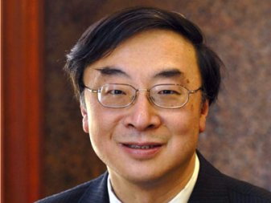

Henry HU Hung-lick, GBM, GBS,born 20 January 1920 is a Barrister-at-Law in Hong Kong.
He earned a Bachelor of Law from National Chengchi University in 1942, and a Doctor of Philosophy and a Diploma of High Studies in International Law and International Affairs from the University of Paris. As Vice-Chairman of the Reform Club, he was elected as a member of the Urban Council on 1 April 1965.
In 1976, he was nominated to serve on the Legislative Council of Hong Kong.
He married Chung Chi-yung; together they have two children.